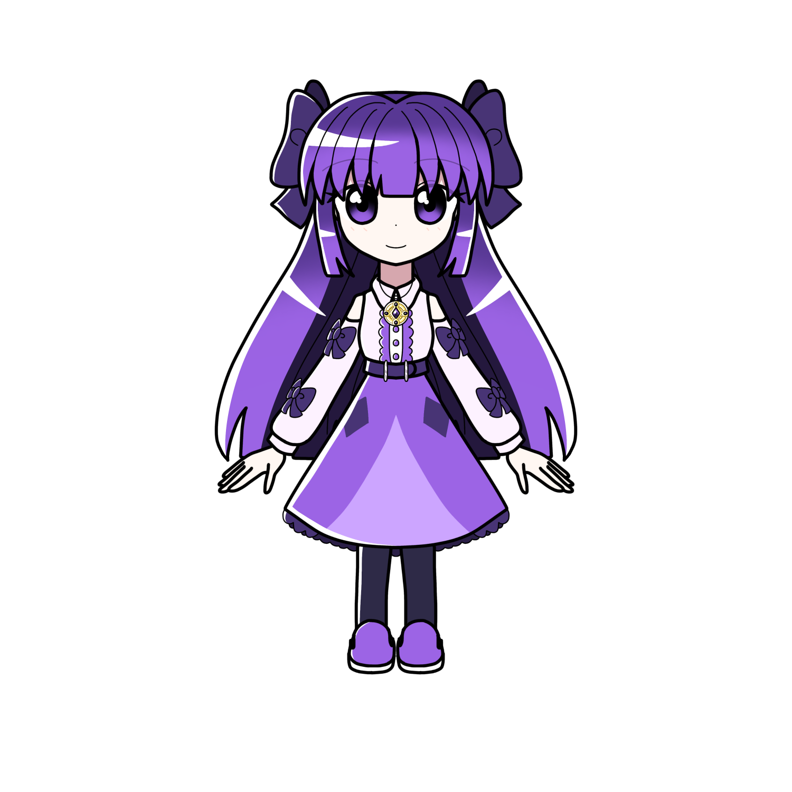

神崎 デリカ
概要
神崎デリカ（カンザキ デリカ）とは
プリズムアミュレットに登場する主人公の一人である。
プロフィール
| 種族 | ドール |
|---|---|
| 性別 | 女性 |
| 年齢 | 15歳 |
| 誕生日 | 12月25日 |
| 身長 | 150cm |
| 血液型 | AB型 |
| 出身 | エーデリーヌ |
| イメージカラー | 紫 |
| イメージCV | 原田ひとみ |

神崎デリカ（カンザキ デリカ）とは
プリズムアミュレットに登場する主人公の一人である。
| 種族 | ドール |
|---|---|
| 性別 | 女性 |
| 年齢 | 15歳 |
| 誕生日 | 12月25日 |
| 身長 | 150cm |
| 血液型 | AB型 |
| 出身 | エーデリーヌ |
| イメージカラー | 紫 |
| イメージCV | 原田ひとみ |